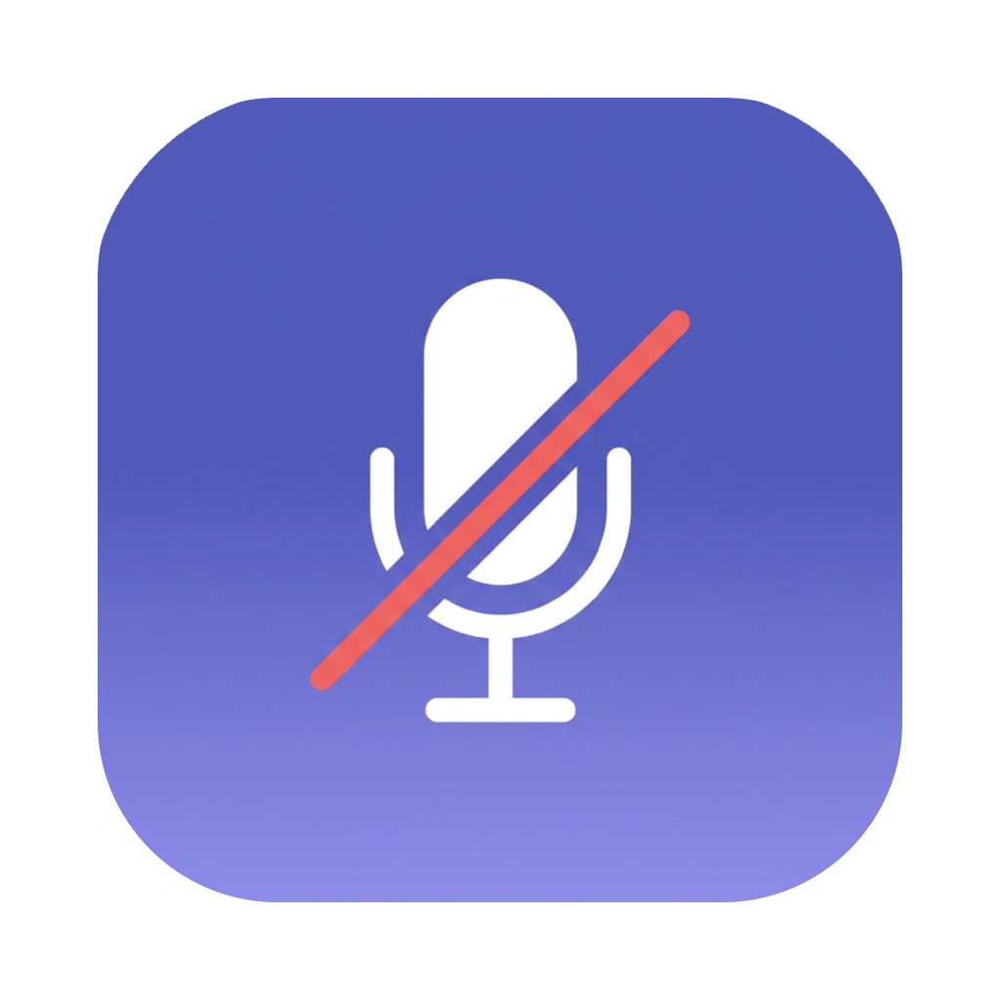
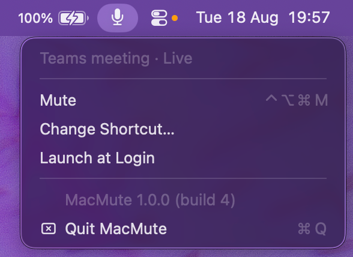

One global shortcut. Teams presses its own mute button — from any window, with no third-party API.

The whole app: a menu bar icon that mirrors what Teams thinks, and one shortcut to flip it.
Two paths, picked automatically, so the shortcut always does something sensible.
MacMute drives the actual “Mute mic” control through the macOS Accessibility API — about 0.2 ms. Teams performs its own action, so its window updates instantly and everyone in the meeting sees the right state.
Falls back to CoreAudio on the default input device, which covers Zoom, Google Meet and Slack huddles. Those apps are genuinely muted, though their own UI will not show it.
The menu bar icon is driven by the Teams button’s own label, so it stays correct even when you mute by clicking inside Teams.
Nothing to enable, nothing your IT admin can switch off. If Teams runs, the shortcut works.
.dmg from the latest release and drag MacMute into Applications.Upgrading? The ad-hoc signature changes on every build, so macOS treats a new build as a new app. Remove the old MacMute entry under Accessibility and add the new one. A paid Apple Developer ID would make the approval stick.
Swift Package Manager, no dependencies. Xcode command line tools are enough.
git clone https://github.com/TuanBT/MacMute.git
cd MacMute
./build.sh # builds dist/MacMute.app
./package-dmg.sh # dist/MacMute-<version>-<build>.dmg
./ReleaseUtils/build_release.sh # full release: icon, app, .dmg, .zip, .pkgVersion lives in VERSION, build number in BUILD; both show up in the menu, so you can always tell which build is installed. Pushing a v* tag builds and publishes a release from GitHub Actions.
| macOS | 13 (Ventura) or later |
| Permission | Accessibility — required for the Teams path. Without it, MacMute still mutes the input device. |
| Teams | Optional. No meeting means the CoreAudio fallback handles it. |